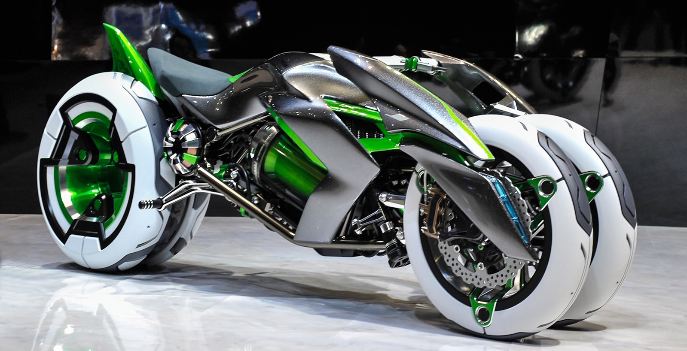
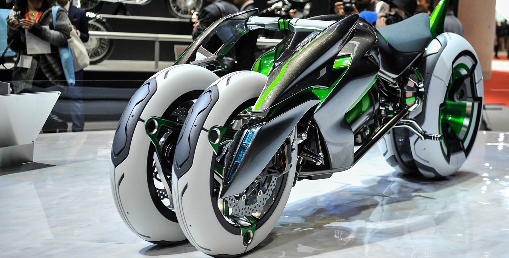

J
Depuis peu, le monde de l’automobile se tourne vers l’électrique. Et si les motos devenaient électriques ? Kawasaki a dévoilé son concept de moto électrique et nous sommes fiers de vous proposer en exclusivité leur modèle “J”.
 La moto a une autonomie de 400 km. Elle est facile à piloter, sans embrayage ni vitesse, elle est agréable et légère. Elle n’a que des avantages : on ne refait pas le plein, pas besoin de vérifications ni de vidanges, pas d’entretien de routine du système de transmission.
Mais l’entreprise japonaise ne s’arrête pas là. En effet, cette moto, équipée de trois roues, est un engin tout droit sorti d’un film de science-fiction. Avec ses deux positions possibles, elle saura plaire à tout le monde. Que vous soyez moto de tourisme ou plutôt moto de sport, elle est faite pour vous. Kawasaki a inventé son concept de moto convertible.